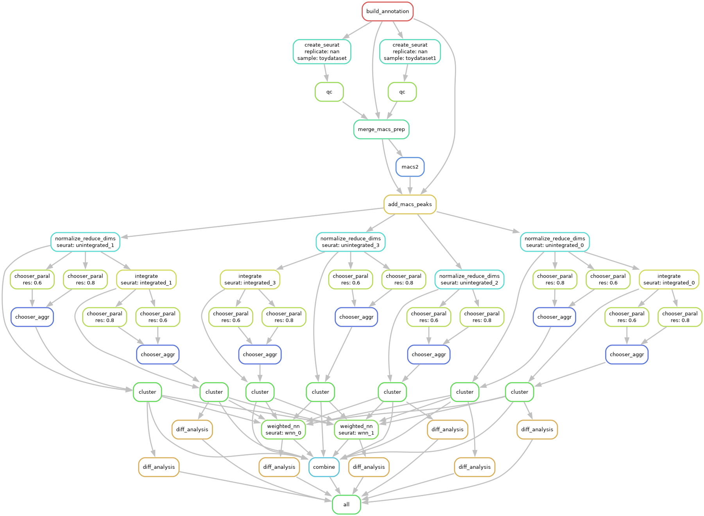

Multiome Workflow
The Multiome workflow starts with feature-by-barcode matrices and performs various QC steps and batch correction, clustering optimization, differential testing, and combines everything together into a single Seurat object for easy exploratory visualization and downstream analysis.
Specifically, the workflow does the following:
Load different formats (HDF5, MEX, RDS) from cellranger pipelines
Downloads genome annotation files
Normalizes and/or scales data based on assay type
Reduces technical variation and batch effects
Linear dimensional reduction
(Optional) optimizes clustering parameters
Non-linear dimensional reduction for visualizations
Weighted Nearest Neighbor analysis
Differential testing of gene expression, chromatin accessibility, and overrepresented motifs.
To configure a Multiome experiment, see Multiome Examples.
